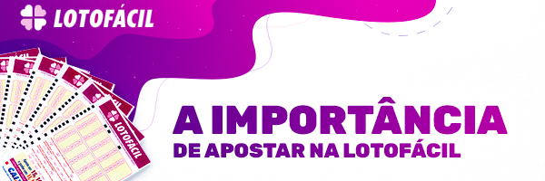

|
 |
HISTÓRIA DA LOTOFÁCILA Lotofácil é hoje uma das loterias mais populares do Brasil. Seu nome não é apenas marketing. De fato, acertar na Lotofácil é muito mais fácil do que em jogos como a Mega-Sena, Dupla Sena ou Quina. Mas a popularidade da Lotofácil não está necessariamente em sua “facilidade”, mas principalmente no custo-benefício das apostas e no ganho com apostas realizadas por pequenos grupos em bolões caseiros e regionais. |
A ORIGEM DA LOTOFÁCILA Lotofácil é um jogo de loteria que, como os demais, é gerido pela Caixa Econômica Federal. A Lotofácil é uma aposta relativamente nova. Enquanto outras loterias acumulam décadas de história no Brasil, a Lotofácil foi criada apenas em 2003. Desde o início, seu objetivo era criar um cenário mais simples e com maiores possibilidades de ganho para os apostadores. Os bilhetes são razoavelmente baratos e as chances de ganhar prêmios menores são grandes. |
O PRIMEIRO CONCURSO DA LOTOFÁCIL
Aconteceu no dia 29 de setembro de 2003 e os números sorteados foram: |
POR QUÊ A LOTOFÁCIL FOI CRIADA?
Loterias que distribuem grandes prêmios para poucos apostadores, especialmente no Brasil, são um alvo fácil para teorias da conspiração.
O brasileiro desconfia dos sorteios realizados em loterias – embora não pare necessariamente de jogar. O sistema é realmente eficiente e fiscalizado,
mas a cada novo prêmio milionário distribuído, renovam-se as teorias. |
|
Quem joga sempre na Lotofácil certamente acumula vários recebimentos de prêmios, ainda que seja no acerto de apenas 11 números. Com a Lotofácil, a Caixa Econômica pode criar um instrumento para recuperar o nível de confiança do jogador. |
|
Essa maior probabilidade de retorno tornou a Lotofácil rapidamente uma das loterias mais populares do país. Com mais jogadores apostando,
prêmios também crescem substancialmente, e hoje a Lotofácil “paga bem melhor” do que nos anos logo após sua origem. |
A LOTOFÁCIL É PARA VOCÊ?A Lotofácil é uma forma simples e sustentável de criar uma rotina de apostas em loterias. Isso ocorre, principalmente, por três razões: |
|
SEU CUSTO DE APOSTA NÃO É CARO |
|
O FUNCIONAMENTO E MECÂNICA DO JOGO EM SI É SIMPLES |
|
A POSSIBILIDADE DE GANHO É BEM MAIOR, EMBORA EXISTE PRÊMIOS MENORES. |
|
Para quem busca uma estratégia de ganhos moderados e pretende investir um valor mediano em apostas, especialmente por meio de bolões, a Lotofácil
é o jogo ideal. |
| Saiba como apostar na Lotofácil |
| Marque seus números preferidos na Lotofácil |
| Siga-nos |
| www.investloto.com.br |